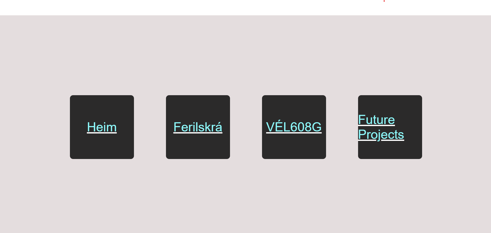
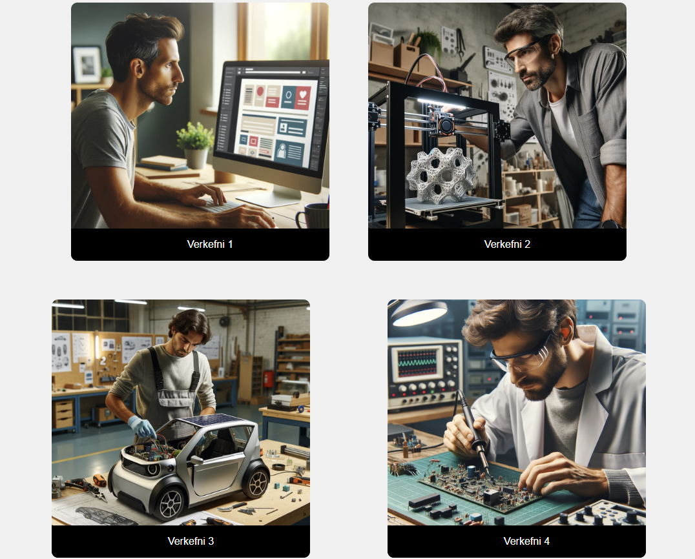
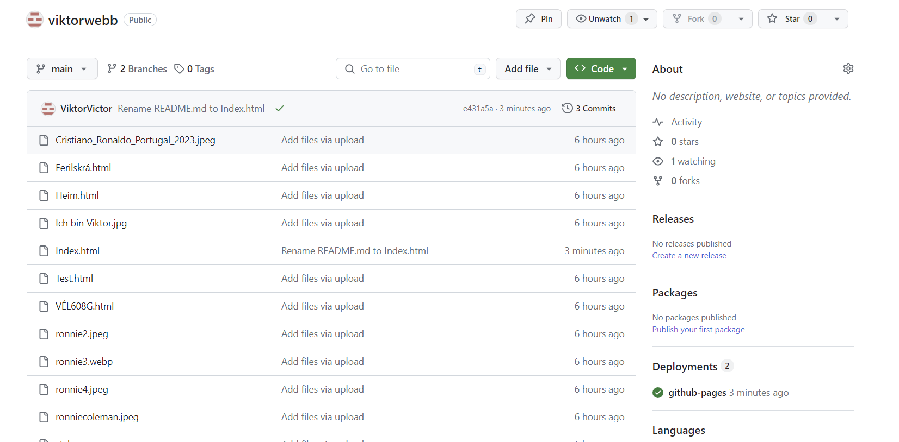

Verkefni 1
1
Sniðmátið, innblástur og ákvarðanataka var fengin frá síðunni hans Atla 2022. Hún var einföld og auðveld að sigla í gegnum. Ég tók mig til og gerði síðuna frá grunni með því að gera svipað snið og hjá Atla.
Hönnunin var miðuð við að notandinn upplifi engan erfiðleika við að sigla í gegnum vefsíðuna. Af þeim sökum var ákveðið að nota fjóra svarta hnappa til þess að ferðast um síðuna. Hnapparnir er aðal hönnunin sem sker sig úr, og að öðru leyti er vefsíðan frekar einföld með engin stór transitions.
Myndvinnslan fyrir síðuna var frekar auðveld. Það er bara mynd af mér og svo myndir fyrir verkefni 1, 2, 3 og 4.
2
Þetta er einmitt sem ég vil fá úr áfanganum, búa til síðu sem sínir hvað ég get gert sem mun mögulega nýtast mér fyrir framtíðar vinnuleit.
Hef mikinn áhuga að gera MIDI controller sem ég get tengt við Ableton Live.
3
Það var greinilega vesen að hlaða inn repositories sem var mælt með frá kennara á einn veg. Þannig að hann sýndi okkur aðra leið sem var miklu einfaldari með því bara að "drag & droppa" gögnin inn á Github síðuna sjálfa.
